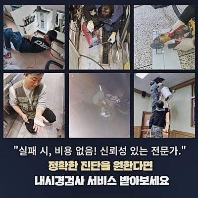
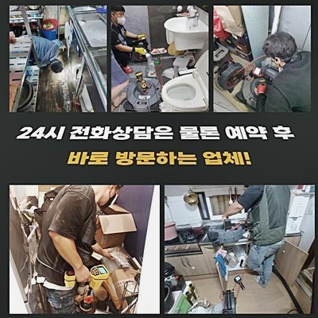
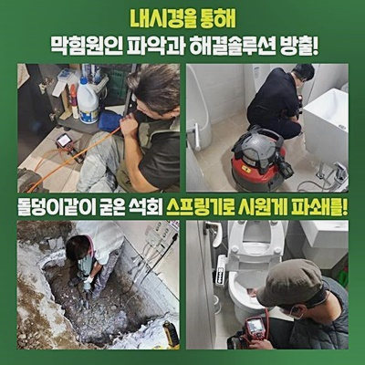
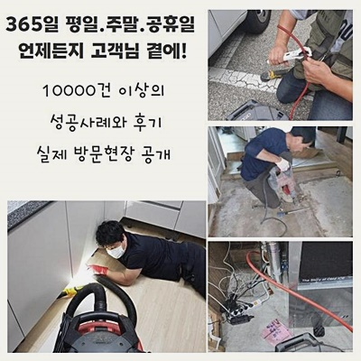
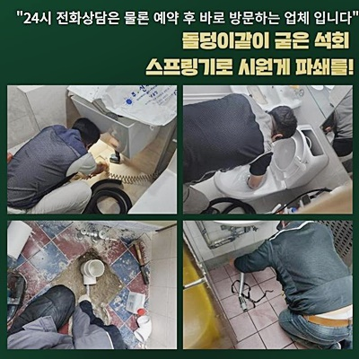
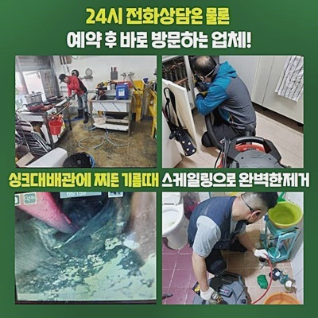

🏠 미추홀구 숭의동화장실하수구막힘 관교동 하수구뚫어주는업체 출장설비
용인 하수구막힘 전문 시공 후기

📋 작업 개요
- 위치: 용인
- 서비스 유형: 하수구막힘, 배관막힘, 역류해결, 뚫는업체, 배관청소, 고압세척, 설비공사
- 작업 일시: 2024. 7. 28. 9:44
- 업체명: 하수구수사대 (010-5615-2118)
🔍 문제 상황
미추홀구 숭의동화장실하수구막힘 관교동 하수구뚫어주는업체 출장설비
물막힘이 생기는 까닭은 여러가지예요
물티슈나 플라스틱 조각에 의해 생길 수도 있으며 기름슬러지가 배수관 구석쪽에 누적된 후 시간이 오래 지나가서 단단하게 경화돼는 현장도 꽤 나타나고 있습니다
금번엔 배관트러블이 일어난 지점을 말씀해 드리도록 하겠습니다
여기는 주방시설 활용에 장애가 생겨서 검진을 요망하셨는데요
이러한 문제가 생겼을 때에 베이킹 소다나 뜨거운 액체 아니면 기다란 막대를 사용해서 상황을 결척하려는 의뢰인분들이 많죠
간단한 정체라면 처치할 수 있겠지만 다층적 원인에 의해 막혀버리는 일이 생겼다면 자체적으로 해소가 힘겨울 수 있죠
이번에 간 곳은 바닥면에서 특히 수분이 빈번히 유출되고 하수구에서마저 누증되는 양상이 나타나 물넘침이 나타나는 형국이었습니다
주방공간은 여과기기가 세팅되어 있어서 설거지 과정에서 방출되는 잔재를 일차로 밭치고 나머지만 배수관으로 빠져나가고 있었네요
다만 조그마한 고형물이나 기름들은 분리되지 않고 즉각적으로 파이프로 진입합니다
이로 인하여 침전물이 점차적으로 파이프에 누적되면 배관 내부에서 오수가 빠져나갈 수 있는 영역이 지속적으로 비좁아지게 되며 물막힘 문제가 발발한답니다
전반적인 문제점을 파악하고자 배수관전용 촬영기기를 파이프 내부로 투입하고 본질적인 문제점을 조사하기로 결정했어요
주방시설의 하수관은 인접한 바닥부분으로 통하는 상황이었는데요

🔎 원인 분석
💡 전문가 진단: 정밀 진단 장비를 사용하여 슬러지의 고착 여부를 판명하고 타격/세척 작업을 실시했습니다.
그렇기 때문에 이 지점의 막힘을 고치기 위해선 그 부분을 개문하여서 조사를 할 필요가 있죠
해당 처소처럼 바닥면쪽에 찰핍하기 수월하다면 추가적인 제거시공은 생략가능합니다
그렇지만 전체적인 구조 상 쉽게 접근하기 힘든 형태로 이뤄진 주방에서는 타공이 불가결할 때도 있답니다
이렇게 기존설비를 해체하는 일은 고객님 댁에 방문하여 관련된 상황을 파악한 다음 실시하고 있고 이런 민감한 사항들은 수선 이전 의뢰인에게 고지를 해드린 다음에 수행합니다
배관카메라를 이용하여 바라본 배관면의 곳곳엔 많은 슬러지가 잔존해 있었죠
기름때와 슬러지가 결합하여 주방에서 발생한 탁수가 방출되지 못한 거였어요
보통 기름찌꺼기는 물성분과 융화되기 어려워 관로에 기름성분이 넘어가면 신속하게 없어지는 것이 아닌 배관의 중앙에 끈끈하게 적체되기 쉽답니다
그리고 기타 침전물이 섞여버리게 되면 하수관의 측면에 강력하게 접착되기에 저절로 괜찮아지기 무망하답니다
과거 경험을 생각해본다면 이런 문제점을 조금이나마 해결하려 끊인 물성분을 통수를 꾀하셨으리라 사료되는데요
다만 이것은 도리어 파이프에 좋지 않은 파장을 전달하기도 합니다
일반적으로 주택 내부에 설비되는 관은 대다수가 열가소성 플라스틱 종류인데 해당하는 부품은 뜨거운 물에 저항이 높지 않아요
그렇기 때문에 온수를 투입해버리면 배수관이 무르게 되어서 단절되거나 파괴되기도 하죠
그렇기 때문에 가열한 수돗물이 아닌 분석적인 방법으로 조속히 찌꺼기를 처리하는 것이 해당 사안을 풀어내는 열쇠라고 말씀드릴 수 있어요

🔧 작업 과정
해당 사안을 안전하게 수선할 수 있는 기계는 샤프트예요
이 기기는 내측에 머물던 이물을 파쇄하는 용도이며 노즐과 노커 등으로 형성됐고 작업자가 목표를 확정한 다음에 노즐을 작동시키면 머리부분이 관로의 찌꺼기를 와해시키죠
부품에는 특별하게 고장을 유발하지 않는 기기이긴 하나 누가 만지는가에 의해 가끔 문제가 발현될 수 있습니다
따라서 저희측에서도 진중한 마인드로 전 과정을 실시하고 있답니다
기나긴 세월 동안 쌓인 찌꺼기들은 단 몇 분만의 분쇄만으로 소멸시키기엔 난관이 많죠
그렇기 때문에 반복적인 시공에 의존해서 진행하여야 해요
답답한 막힘을 만들었던 이물질들을 분쇄기계를 작동하여 신속하게 없애나가다보면 점차적으로 깔끔한 상태의 관로로 변화합니다
후에 내시경cctv를 사용하여 쌓인 이물질의 양을 진단해 줍니다
딱딱한 물체로 가득하였던 파이프가 깔끔해진 광경을 확인하실 수가 있죠
미량의 고형물이라고 해도 관에 잔류한다면 몇 주 지난 뒤에 또다시 하수관정체가 일어나는데요
설거지 등을 하며 생기는 것들과 손쉽게 섞이고 뭉치게 되고 결과적으로 통수를 저해합니다
그러므로 처음 소쇄할 시 미량의 슬러지라도 존재하지 않게 착실하게 세척하는 게 좋습니다
수회 소쇄를 이행하면 드디어 배수관이 시원하게 뚫려버립니다
물막힘과 역류 등을 유발하던 이물들이 깨끗하게 소쇄된 것을 확인할 수 있었으며 배관카메라를 의뢰인에게도 보게해 드렸네요
의뢰인분도 궁금했던 부분을 몸소 검열해보실 기회가 되었고 관로 정체의 전 과정을 인지할 수 있었죠
우리팀은 전체적인 구성을 솔직한 자세로 오픈하므로 마음 편안한 방문이 계속되는 것이라 생각합니다
해당현장의 해당 사안을 전체적으로 정리했다면 실질적 테스트를 속행하고 있어요
이걸 검토하기 위하여 배수공의 덮개를 막아두고 바케쓰 등에 그득하게 액체를 담아서 일거에 부으면 관로의 청소 성과를 파악할 수 있습니다
탁수가 소멸되기는커녕 역류까지 간간이 일어났었는데 플렉스샤프트를 가동하여 수월하게 끝마치게 되었어요
후회없는 수리업무를 완성하려면 올바르게 시공해내는 업체의 조력이 요망돼요


✅ 작업 완료
수준높은 실력을 기초로 신용도가 높은 하수관 시공 담당자의 보조를 얻어서 분명하게 처리할 수 있죠
뚫음을 빈틈없이 완수하고 살균작업까지 속행하고나서 배관통수 현장을 끝마쳤어요
기계를 작동시키면서 인접지점에 노폐물이 흩어지고 각종 유독물질이 잔류할 수 있어서 관련된 클리닝은 필수적으로 공사 뒤 완수해 드립니다
이번 하수도 뚫음 현장처럼 가정 안에서 처리하기 수월한 곳이면 관계없지만 침전물이 하수관에 전반적으로 빽빽한 케이스라면 물청소 업무가 가증되기도 한답니다
금액과 관련해서는 공사 뒤 검진을 통해서 구체적으로 알려드리고 있으니 방문 진단을 청하기를 바라요
배관통수과 관련된 의문점이 있으시다면 휴일이라도 망설이지 말고 전화부탁드려요



⚠️ 하수구 배관 막힘 예방 및 관리 가이드
- ✅ 머리카락, 비닐, 물티슈 등 물에 분해되지 않는 이물질은 하수구 유입을 절대 금지해 주세요.
- ✅ 하수구 거름망을 씌우고 모여진 이물질은 주기적으로 쓰레기통에 바로 비워주셔야 합니다.
- ✅ 배관 노후가 심할 경우 이물질이 더 쉽게 걸리므로 주기적인 배관 세척(고압세척 등)을 권장합니다.
- ✅ 작업 후 1년 이내 재발 시 하수구수사대에서 무상 A/S 보증 서비스를 제공합니다.
💡 핵심 정리
- 확실한 장비 작업(내시경 점검 및 샤프트 스케일링)으로 원인을 뿌리 뽑습니다.
- 작업 후 1년 이내에 동일한 부위 재발 시 100% 무상 A/S 서비스를 보장합니다.
- 서울 · 경기 · 인천 전 지역에 24시간 언제든 긴급 출동할 수 있도록 항시 대기 중입니다.
❓ 자주 묻는 질문 (FAQ)
🚨 용인 하수구막힘 문제로 고민이신가요?
정확한 원인 진단과 확실한 시공으로 재발 없는 해결을 약속드립니다.
24시간 긴급 출동 | 서울 · 경기 · 인천 전지역 | 1년 내 재발 시 무상 A/S